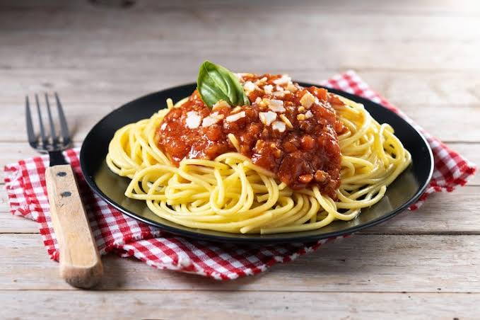

Spaghetti

The Ingredients
For this easy spaghetti recipe, you will need:
- a box of Barilla Pronto Half-Cut Spaghetti noodles or your favorite pasta
- ground beef or sirloin – you can also swap ground turkey, ground chicken, ground Italian sausage or another ground protein of your choice
- a jar of your favorite tomato sauce or marinara sauce, or homemade spaghetti sauce if you have it on hand
- fresh basil for garnishing
- freshly grated Parmesan cheese for serving if desired
- Salt, black pepper, red pepper flakes, oregano, parsley or other seasonings or herbs are optional and you can add them to taste
The Recipe:
- To make this spaghetti recipe with ground beef, first cook the pasta according to package instructions in a large pot or Dutch oven.
- Then brown the ground beef over medium-high heat, breaking it up with a spatula as it cooks. No need to drain the grease if you use lean ground beef.
- After beef has cooked through, add the pasta sauce and stir to combine and bring it to a simmer. Continue cooking until the meat sauce is completely heated through.
- After the pasta has finished cooking, plate the pasta and add sauce to each individual plate as desired. I garnished my homemade spaghetti with fresh basil and Parmesan cheese, but feel free to omit if you don’t have either on hand.
Retun to home